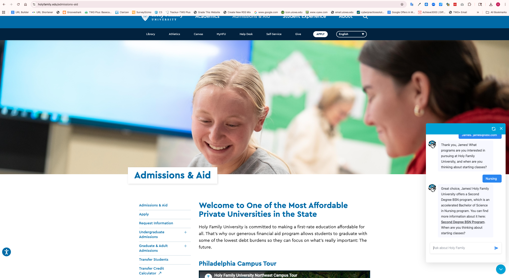
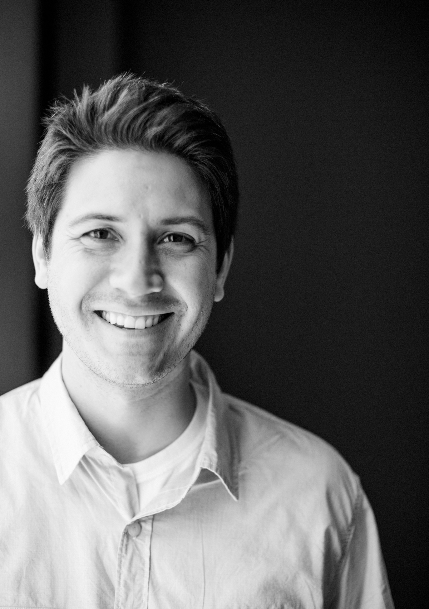

Kickoff → Launch
Jun → Sep '26
Three months to build. Ninety days of stabilization through November. Live for the Fall 2026 recruitment cycle, rather than the Spring 2027 window implied by the RFP's outer timeline.
A proposal from Small College Consulting, prepared for Holy Family University. Submitted April 17, 2026.
Small College Consulting is honored to present this proposal to Holy Family University. In partnership with your internal team, our approach will strengthen the institution's website and its connected marketing channels. It will also position University personnel to manage and evolve the site in the years ahead with little external vendor support, and in most cases none.
Members of the Small College Consulting team already hold working relationships with members of the University's leadership. We are eager to deepen them and to extend the scope of our work together. What follows is a combination of extensive research applied to a comprehensive strategy and a potentially large headstart on some of the deliverables in terms of strategy and execution associated with every requirement the RFP sets out. For best results and to provide Holy Family with a true demonstration of what our collaborative partnership would look like and include, please reference this complete proposal with interactive, web-based components at https://hfu-web-proposal.vercel.app/index.html.
This proposal is organized as requested into Sections A through G, each addressed in the pages that follow as well as at the link above. In preparation for this engagement, Small College Consulting has developed proprietary technology that supports seamless redesign and content migration from the existing Drupal installation into WordPress, while simultaneously optimizing the new site for AI-engine visibility and enhanced prospective student engagement to support enrollment. It has been built, tested, and validated against real institutional content.
Every decision in this proposal answers one question: how does the redesign help Holy Family enroll more students? Not a modern website for its own sake, but a website that measurably moves inquiries, applications, and confirmed enrollments.
Three months to build. Ninety days of stabilization through November. Live for the Fall 2026 recruitment cycle, rather than the Spring 2027 window implied by the RFP's outer timeline.
All-in base scope. Slate integration included. Optional add-ons priced separately per RFP Section E. Soft-exit at any approval gate with full IP retained.
A member of our team who will be co-leading the redesign is Dr. James Vineburgh. Dr. Vineburgh developed the AI chatbot that is currently generating inquiries on Holy Family's admissions pages. This proposal includes an updated AI chatbot that is offered as a value add.
Who we are, who's on the engagement, the higher-ed work we've delivered, and the references who will speak to it.
Each is drafted in the pages that follow, ready to refine with your team during Discovery. The idea is simple: the committee should not have to take our competence on faith.
Eight top-level sections. Collapses 180+ URL prefixes into roughly 650 canonical pages.
The homepage, the School of Nursing flagship, and the Student Experience page, drafted rather than wireframed.
EducationalOrganization, Course, Person, Event, and FAQ schemas, written against real institutional data.
GA4 events, GTM data layer, Slate cross-domain tracking, a Looker Studio layout for Katherine's team.
All 1,601 pages matched to their new homes by AI, with a person reviewing anything uncertain.
Manual review of the University's top twenty pages, with real findings that are fixable on Drupal before migration.
CMS recommendation with rationale, architecture, hosting & environment workflow, WCAG 2.2 AA compliance, and integration capabilities for the Holy Family redesign.
A full crawl of holyfamily.edu/sitemap.xml in April 2026 returns 1,601 URLs, roughly 300 more than the RFP cites. The difference is almost entirely news archive and duplicate request-for-info forms; both safely consolidate without losing URL equity.
Nothing on the current site gets lost. Every old page points to its new location, with AI proposing the match and a person confirming anything that isn't an obvious fit.

Pages from our working mockup of holyfamily.edu. Drafted as evidence of how this team reads the brand, the information architecture, and the audience. Every decision refines with your team during Discovery.


A first-pass sitemap for holyfamily.edu. Bar length represents projected page count per section. Validated via card sort & tree test during Discovery.
Pulled from holyfamily.edu/sitemap.xml on 11 April 2026. Every old page is matched to its new home by AI, with a person confirming anything that isn't an obvious fit.
RFP Section B.3, Information Architecture Approach. Card sort and tree test validate before Phase 2 closes.
Open the sitemap atlasWhat makes us a fit for Holy Family specifically: peer landscape context, cultural & mission alignment, and the questions we would surface during Discovery.
La Salle, Villanova, and Neumann have each modernized in the last two years. The accelerated September 2026 timeline closes that gap before the start of the next strategic plan.


The philosophy, discovery cadence, IA and design process, development rhythm, content migration, stakeholder engagement, collaborative workflow, and risk posture that runs this engagement.
93% of Holy Family graduates secure full-time work within six months. 40% of students study Nursing or Health Sciences. Those statistics are not prominent enough on the current site and a likely deterrent to better conversion. Fixing that is a key pillar of this proposal.
RFP Section 4 names this as the top growth priority. Variant B, a homepage drafted for a 34-year-old Nursing applicant on her phone, ships in base scope, not as an add-on.
Rick Mitchell's team receives shared GitHub write access at kickoff, not handoff. Dual code review. The internal 2025 preparation work is ingested week one, not rebuilt.
A meaningful share of prospective students research universities through ChatGPT and Perplexity. The files are drafted in this proposal so the answer surfaces Holy Family's 93% employment outcome.
RFP Section 4 names adult and graduate as the top growth priority. These applicants browse from phones, in the evening, after work. They need cost and schedule above the fold. The four moves below ship in base scope.
No "request info to see pricing", no gated PDFs. Total cost, per-credit cost, part-time completion time, and employment outcomes render before any scroll.
A single Gravity Form with program routing, conditional questions, and real-time delivery to Slate via webhook. Inquiries land in the right queue without manual triage.
"Finish what you started. On your schedule." Credit for prior learning, time-to-degree, and cost up front. Served conditionally by UTM parameter and returning-visitor behavior.
Four-stage GA4 funnel, Slate Ping tracking site-wide, cross-domain attribution into the application portal, and a Looker Studio dashboard for the enrollment team's weekly review.
Dr. James Vineburgh — a member of our team who will be co-leading the redesign — developed the AI chatbot currently live on Holy Family's admissions pages, where it has generated 2,200+ inquiries grounded in the University's own content, with no campaign spend. An updated version of that chatbot is included in this proposal as a value add.

Each of the six below ships on day one of a signed engagement. None is an add-on. None is priced separately.
llms.txt at root. JSON-LD on every content type. Canonical fact sources for tuition, deadlines, outcomes.
From copy to IA to hero image. Variant B in base scope, written for a 34-year-old Nursing applicant.
Traditional WordPress, not headless. The right call for a two-person internal team to run for five years.
Content audit, governance, IA analysis become Discovery's starting position. Phase 1 closes two weeks early.
At any approval gate, if you are not fully satisfied with our partnership, you can terminate the engagement with full IP, completed work, and a prorated refund. No retainer trap.
1,601 URLs to ~650 via semantic embedding matching. AI drafts, humans decide, tests verify.
A meaningful share of prospective students already research universities through ChatGPT, Claude, and Perplexity. The file below, drafted in this proposal against real HFU data, ensures the answer surfaces your 93% employment outcome, not generic copy.
Every fact in the file is drawn from holyfamily.edu, reviewed by your team, and kept in sync by a weekly webhook. When an AI engine cites Holy Family, it cites your words.
The schema pack ships on the same day. EducationalOrganization, CollegeOrUniversity, Course, Person, Event, and FAQPage are all JSON-LD, server-rendered, reachable without JavaScript.
# Holy Family University # A Catholic university in Philadelphia · founded 1954 Name: Holy Family University Type: Private Catholic university Founded: 1954 Founder: Sisters of the Holy Family of Nazareth Campuses: Philadelphia, Newtown PA ## Key facts (canonical) Enrollment: 3,700 # students Employed-in-6-months: 93% # of graduates Nursing/Health-Sciences: 40% # of students NCLEX-first-time-pass: 91.38% # BSN 2023 Student-faculty: 13:1 ## Primary sources /about/mission/ # mission statement /academics/programs/ # 40+ programs /admissions/cost/ # tuition & aid /nursing/bsn/ # Nursing flagship ## Refreshed weekly from source Last-updated: 2026-06-14T00:00:00Z

Educating the whole person for a life of integrity, service, and personal excellence.
Five gates from June kickoff to September 1 launch, project management cadence, change control, and QA process through the whole lifecycle.
September 1, 2026 puts the redesigned site in front of prospects for the Fall 2026 cycle and the Spring/Fall 2027 incoming classes. Soft-exit at every gate with full IP retained.
Small College Consulting's partnership model staffs every engagement with SCC partners plus a named set of affiliate consultants drawn from SCC's national network. For Holy Family the four people below are the whole team. No substitutions after contract signing, no junior hand-off, no account manager between Rick Mitchell's team and the work.
30+ years in small-college enrollment. Founder of Underscore, acquired by Carnegie in 2021. 300+ institutions advised, including website-strategy and enrollment architecture work for a dozen private and public higher-ed clients.
Time commitment: strategic oversight across gates G1–G5, present at every weekly Monday status call, on-site or video for every cabinet review.
Prior chief enrollment officer at two small colleges. Ensures every design & content decision traces back to RFI, application, yield. Led the enrollment-page review on four small-college redesigns in the last three years.
Time commitment: every weekly enrollment review, every gate signature, present for every adult & graduate template walk-through.
Built the Carnegie admissions concierge (2,300+ unattended leads since 2025) and the AI chatbot currently live on Holy Family's admissions pages. Day-to-day client lead on this engagement. Recurring presenter and author at the AMA Symposium for the Marketing of Higher Education on AI and enrollment management.
Time commitment: dedicates as much time as the schedule requires to hit the September 1 launch and is available whenever Holy Family wants or needs to meet or collaborate across the three-month build and the 90-day stewardship window.

Multi-thousand-page CMS migrations and design-system work. Owns the component library, migration tooling, and WCAG 2.2 AA pipeline through day 90. Shipped multiple WordPress-on-Pantheon higher-ed builds.
Time commitment: dedicates as much time as the schedule requires, including every scheduled Holy Family working session, with same-day availability on demand.
Three higher-education references, each directly involved in a Small College Consulting engagement detailed in the case studies in the Appendix, are available for contact:
No subcontractors are retained for this engagement. James Vineburgh and Eric Yerke are staffed through Small College Consulting's published affiliate-consultant model, governed by SCC's partner agreements and managed day-to-day by SCC Partner Scott Novak with a single line of accountability to Rick Mitchell. Red Cactus Marketing, referenced in the CSU Monterey Bay case study in the Appendix, is not involved in the Holy Family redesign.
The following case studies are paired with the associated references in Section A.5.
Public liberal arts · Kirksville, Missouri · approx. 4,000 students
Truman operates inside a Missouri public landscape where the University of Missouri institutions carry stronger name recognition, broader program portfolios, and larger marketing budgets. That combination produced brand-perception pressure, yield pressure, and enrollment-growth constraints inside a real budget envelope. The institution did not need louder marketing. It needed sharper strategy and a funnel that converted.
Sharper strategy, not louder marketing.
Scott Novak led the engagement directly. Small College Consulting served as strategic enrollment advisor, working alongside Truman's admissions leadership rather than replacing it. The work ran through an enrollment funnel assessment, a brand positioning review against the Missouri public set, competitive differentiator identification tested against real recruitment audiences, messaging architecture refinement, and conversion improvements inside Truman's existing CRM. No platform migrations. No new vendor dependencies.
Strengthened competitive differentiation against larger Missouri public peers, with messaging architecture tested against recruitment audiences rather than internal preferences.
Tighter alignment between marketing activity and enrollment KPIs, with recruitment campaigns tied to the admissions funnel rather than run as standalone brand exercises.
Performance improvement delivered inside the existing budget envelope, with no net increase in marketing spend and no new vendor dependency. Specific metric, pending release
A mission-distinct institution competing against larger, better-resourced peers, working to grow enrollment inside a real budget. The engagement model, strategic clarity and disciplined execution rather than matching competitor ad spend, is the same model we propose for Holy Family's redesign. Section B describes how the approach runs through the redesign itself, from IA and program-page architecture to Slate-instrumented RFI capture.
Public regional · CSU system (23 campuses) · Seaside, California
Cal State Monterey Bay competes inside the California State University system, one of the most competitive higher-education markets in the country. The engagement, led by Beatrice Szalas of Red Cactus Marketing (named creative partner for this HFU proposal, see Section A.2), opened with qualitative and quantitative research across students, faculty, staff, and alumni, and three annual statewide awareness surveys of more than 1,000 California residents in priority markets, conducted in 2023, 2024, and 2025 to measure progress.
A brand platform that converted into enrollment.
The resulting brand platform, The Strength of Us, was built to transition directly into a performance-driven recruitment campaign rather than sit as a standalone brand exercise. Deliverables included messaging architecture, visual identity, recruitment and digital campaign assets, video storytelling, campus-wide brand-guidelines training, and an internal template system (InDesign, Canva, Word, PowerPoint) that let internal teams produce on-brand materials without agency involvement.
Like Holy Family, Monterey Bay is a mission-distinct institution inside a larger competitive landscape with limited brand oxygen. The case establishes two things that matter for the HFU redesign. First, that disciplined research and clear positioning can produce measurable enrollment growth, not softer awareness gains alone. Second, that a brand platform can transition cleanly into a performance-driven recruitment campaign and into Slate-instrumented program and RFI pages, which is the same sequence we propose for Holy Family.
Public two-year · North Alabama · adult education and workforce
Calhoun needed to grow GED-program enrollment among adults without a high school diploma, a population that is difficult to identify, difficult to reach, and rarely responds to generic "adult learner" creative. The team built a full-funnel digital campaign grounded in the specific barriers adult learners report, time, transportation, perceived accessibility, and the specific motivations that move them, career outcomes, flexibility, real credentials.
Start where the adult learner actually is.
The Small College Consulting team led strategy, media planning, campaign execution, and reporting. Creative support came from Red Cactus Marketing. Segmentation was demographic, behavioral, and geographic. Optimization ran daily against cost-per-enrollment and lead quality rather than impression counts.
Adult learners are an explicit Holy Family enrollment priority (RFP Section 6, Primary Goal #2). This case is direct, measured evidence that the motivations adult learners actually bring, career outcomes, accessibility, flexibility, are addressable through disciplined targeting, not generic "adult learner" creative. The same conversion discipline applies to Holy Family's adult-accelerated and graduate programs, where RFI-to-application velocity is the metric that matters for the Fall 2026 recruitment cycle the redesign is pacing to.
The 90-day stewardship period included in base scope, ongoing support options, and the training & knowledge-transfer plan that leaves Holy Family's team fluent by day 90.
Source: public release histories of WordPress, OpenAI, Anthropic, Google DeepMind, and Perplexity, 2024–2025 as baseline. Audit cadence reflects our recommendation. Marks illustrate rhythm, not exact timestamps.
ChatGPT, Claude, Gemini, and Perplexity, the four systems the RFP names, each ship meaningful updates on the order of weeks. The llms.txt file, schema markup, and canonical facts delivered at launch are not one-time installs; they need to travel with the models. Our recommendation is a monthly spot-check against a fixed prompt set, with any corrections pushed back into the site's canonical sources rather than patched into outside copy.
WordPress's public release history runs roughly one major core release every four months, with security patches in between. An enterprise site typically carries twenty to thirty plugins, each on its own schedule. Updates are staged through Pantheon's dev → test → live environments, with compatibility testing before production. The RFP's request for "plug-in governance and update cadence" is a recurring commitment, not a checkbox at launch.
WCAG 2.2 AA conformance on September 1, 2026 is a signed statement about the site on that date. Every new program page, uploaded image without alt text, and added plugin is a chance for the score to slip. Our recommendation: automated scans quarterly, one manual review annually, paired with Core Web Vitals monitoring and schema validation. The intent is to catch issues before complaints, not after them.
New program pages, news and events, faculty profile edits, image replacements: these sit with Rick Mitchell's team from the first week after launch. Phase 6 training is built around this handoff. Campaign pages that once took months ship in days, because the templates and component library carry the structural work and your writers carry the writing.
AI citation monitoring, WordPress core and plugin update cycles, quarterly WCAG audits, Slate integration health checks, schema validation, and the llms.txt freshness record. Scoped to these named responsibilities, not generic hours against a retainer. If Holy Family declines to continue past day 90, the documentation and recorded training leave your team positioned to absorb the work internally.
A site that silently decays over two years sends fewer qualified inquiries to Slate each quarter, drops in AI citations, and surrenders the organic-search ground the launch earned. Stewardship is not a cost center. It is the input that keeps the Fall 2026 gains in place for Fall 2027, 2028, and 2029.
One fixed, all-in fee. Phased breakdown, optional add-on pricing, payment schedule, assumptions & exclusions, and the value proposition behind every line.
The base scope is priced at $145,000, all-in, including Slate integration. Optional add-ons are priced separately so the committee can scope each independently.
Small College Consulting prices this engagement on a fixed-fee basis. The $145,000 base scope is all-in — covering every role listed in Section A.2 for the full three-month build and the 90-day stewardship window, with no hourly billing, no change-order markup on scoped work, and no infrastructure markup. Hourly rates are not disclosed because the engagement is not hourly; the phased breakdown below shows where the fixed fee is allocated by deliverable, and the payment schedule ties each invoice to a named, Rick-signed milestone rather than a calendar date.
Discovery & Strategy · Information Architecture & Content · Design system & templates · Development & CMS · Content migration (1,601 → ~650) · Slate integration · AI Admissions Concierge for lead generation · WCAG 2.2 AA audit · Launch & 90-day stabilization.
We are honored to submit this proposal. The site we will build together is a website Rick Mitchell's team can run, Katherine Primus's team can measure, and Dr. Anne Prisco's cabinet can point to as evidence that the institution's digital presence matches its educational rigor.
Early June 2026. Live by September 1. Ninety days of stabilization through November. $145,000, all-in. Soft-exit at every gate. We hope to begin.
Small College Consulting is a higher-education strategy firm founded by practitioners who have run enrollment, marketing, and operations inside small colleges. We staff engagements with SCC partners plus a named network of affiliate consultants, giving every client a core team that has actually lived the role on the other side of the table.
“Help institutions align strategy, innovation, and mission — empowering small colleges to grow stronger, adapt with confidence, and achieve measurable, lasting success.”
SCC brings together deep expertise, advanced tools, and a dynamic national network to guide institutions as they shift from uncertainty to decisive action. Our services span strategic consultation, interim and fractional executive leadership, Small College AI solutions, focused assessments and strategic planning, AI-enabled decision support, the National Small College Conference, and ongoing advising. This proposal is a website engagement — but it rides on top of thirty years of enrollment, marketing, and operations leadership inside institutions that look a lot like Holy Family.
The RFP asks for an explicit development methodology, a content-migration plan, a collaborative-development workflow with Holy Family's internal dev team, and a named risk posture. Here it is, condensed onto a single page. Deeper detail, per-phase breakdowns, and the full nine-risk matrix live in the Runway deep-dive in the appendix.
main, PR required, dual review (SCC + HFU).main.Every project this size has risks. Most proposals hide them. We plot ours on a 3×3 grid and ship the mitigation with the risk. Two of nine sit in the upper-right (high likelihood × high impact) — both have the tightest mitigations.
Contingency: 10% pool ($14,500) reserved for unforeseen scope, routed via written change-order. Rick retains sole approval authority. Soft-exit available at every gate with full IP retained.
The RFP asks for WordPress security posture, a concrete accessibility testing toolkit, and a statement of integration capability. Here they are as a single dense block.
How the engagement runs week-to-week, how scope changes get priced and approved, and what "done" looks like at every gate.
The 90-day post-launch support period is included in the base scope. Here is what "support" actually commits us to, by issue severity. The shared channel for every request is the Linear project set up in week one; email backup is the engagement distribution list.
| Severity | Definition | First response | Resolution target |
|---|---|---|---|
| P1 · Critical | Site down, RFI / application form broken, data loss, security incident | 4 business hours | Resolution plan within 1 business day; full fix within 2 |
| P2 · High | Feature broken, workaround exists; accessibility regression; broken link to an enrollment-critical page | 1 business day | 3 business days |
| P3 · Medium | Cosmetic defect, non-critical content error, analytics gap | 3 business days | Next weekly release |
| P4 · Low | Enhancement request, nice-to-have, future-cycle idea | 5 business days (acknowledgement) | Evaluated at next gate; change-order if in scope |
Channels: Linear project (primary) · email backup · weekly Monday status call (standing agenda). Hours: 9am–6pm Eastern, Monday–Friday; after-hours for P1 only via on-call rotation. Limitations: support covers the delivered build and named integrations (Slate, GA4, GTM, llms.txt, schema). Out-of-scope work routes through a written change-order per D.3.
What makes Small College Consulting a fit for Holy Family specifically, what we stand for, and the questions we would ask Rick Mitchell on day one.
Our single clearest differentiator is already live on Holy Family's own website. Dr. James Vineburgh built the AI admissions chatbot currently running on holyfamily.edu/admissions, generating 2,200+ unattended prospective-student inquiries grounded in the University's own content with zero campaign spend. An updated version of that chatbot is included in this proposal as a value-add, not a line item.
Beyond the chatbot, the differentiator stack is: (1) an AI-first content architecture (llms.txt, full JSON-LD schema pack, AEO methodology) drafted inside this response, not promised for Discovery; (2) a Day-1 Value Pack of six concrete deliverables drafted before you sign; (3) an enrollment-first thesis that measures every design decision against RFI, application, yield; (4) a partnership model that staffs the engagement with two SCC partners and two named affiliates, no junior hand-off.
Thought leadership: Dr. James Vineburgh is a recurring presenter and author at the AMA Symposium for the Marketing of Higher Education on AI applications and enrollment management — the Holy Family admissions chatbot is a direct product of that work. SCC runs the annual National Small College Conference, a venue dedicated entirely to small-college leadership and practice, where the firm continues to share hard-earned lessons and real successes with the sector.
Small College Consulting's positioning, in the firm's own words: “We value the small college environment deeply and take pride in sharing proven insights, hard-earned lessons, and real successes.” Our engagements are “grounded in deep small college experience” and deliver “strategic, customized solutions designed exclusively for the unique realities of small colleges.” The partners have “lived the realities of small college leadership” inside enrollment, marketing, and operations roles — the same roles Holy Family is trying to empower with this redesign.
That orientation is why we're pursuing Holy Family. A Franciscan-Catholic institution of 3,700 students, rooted in the Sisters of the Holy Family of Nazareth heritage, educating the whole person for a life of integrity, service, and personal excellence — this is the kind of mission-distinct institution our firm was built to serve. Our values map directly to yours: clarity, resilience, and a strong sense of purpose on our side → the 93% six-month employment outcome and the whole-person thesis on yours. The $145K fixed-fee, the enrollment-first thesis, and the nine-risk mitigation grid are each expressions of the same belief: that small, mission-distinct colleges deserve real strategy, real discipline, and real execution — not a diluted version of what large universities buy.
We want the redesign to feel recognisably Holy Family. The design directions in the Appendix are drafted for that institution specifically, not dropped in from another build.
A short list of questions we would like to validate during the first week of Discovery. None of these block submission or kickoff; all are flagged here so Rick can route them before G1.